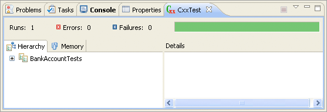

To create a CxxTest project in Eclipse, select File / New / Project... from the main menu, expand the C++ branch of the tree, then select C++ Project and click Next.
If the CxxTest plug-ins are properly
installed, you should be able to expand the Executable branch under
"Project types:" and see an entry labeled Empty Project w/ CxxTest.
Select this option, and enter the name of the new project in the field at the
top of the wizard — for this tutorial, enter BankAccount.
You can now click Finish at this point to create the project — the remaining pages of the wizard have advanced options, and we will want to keep the default settings.
After the project has been created, Eclipse may ask you, "This kind of project is associated with the C/C++ Perspective. Do you want to switch to this perspective now?" Click Yes here.
NOTE: If you create a project without the CxxTest option, it is still possible to enable CxxTest for the project later by viewing the project properties page, selecting the CxxTest category, and then checking the box labeled "Enable CxxTest for this project".
The new project should appear in your Eclipse workspace, in the Project Explorer tab. Before we can start writing test cases, clearly we need a class that we want to test. For this tutorial, consider a simple bank account class that holds a name and a dollar amount, and supports the following operations:
The bank account class we will be using is very limited. We store an integer dollar amount instead of dollars and cents or fractions of a dollar, because a floating-point type would have problems when checking for equality, which we need to be able to do in our test cases to verify that the balance is what we expect it to be after an operation. (Your C++ text should have more information on floating-point types and the comparison problems that are associated with them.)
Let's begin by adding the BankAccount class that
we wish to use in our tests. Right-click on the top-level project ("BankAccount") in the Project
Explorer, and choose New / Header File from the popup menu. In the dialog that appears, type
BankAccount.h as the name of the file and click Finish.
This has created a new BankAccount.h file in the main directory of our project, and
the file was automatically opened in the editor. You will see that Eclipse has already added a
few lines of code to the file. These "inclusion guards" are used to prevent a header file from
being included multiple times while compiling a single C++ source file. Now, add the interface for our
bank account class by copying and pasting the code below into the new file.
// BankAccount.h #ifndef BANKACCOUNT_H_ #define BANKACCOUNT_H_ #include <string> class BankAccount { private: std::string accountHolder; int balance; public: // Constructors BankAccount( const char* holder, int initialBalance = 0 ); // Accessors int getBalance() const; bool isOverdrawn() const; // Modifiers void deposit( int value ); void withdraw( int value ); }; #endif /*BANKACCOUNT_H_*/
Next, we need to add the implementation of these functions. Create new source file in the
root of the project by right-clicking on the project and choosing New / Source File, and
call the new file BankAccount.cpp. Copy the following code
into this new file.
// BankAccount.cpp #include "BankAccount.h" #include <string> using namespace std; // Initializes a new account with the specified account holder name // and initial balance. If the initial balance is omitted, it defaults // to zero. BankAccount::BankAccount( const char* holder, int initialBalance ) { accountHolder = holder; balance = initialBalance; } // Returns the current balance in the account. int BankAccount::getBalance() const { return balance; } // Returns true if the account is overdrawn (has a negative balance); // otherwise, it returns false. bool BankAccount::isOverdrawn() const { return (balance < 0); } // Adds the specified amount to the balance in the account. void BankAccount::deposit( int value ) { balance += value; } // Subtracts the specified amount from the balance in the account. void BankAccount::withdraw( int value ) { balance -= value; }
We now have a complete BankAccount class that we can compile and test.
Unlike working on Java projects in Eclipse, you must explicitly compile your C++ projects
each time you make a change to one of your source files. To do this, click on the Build
button (shaped like a hammer, shown right) in the toolbar.
If you followed this instructions correctly, your project should build without errors. Since the test cases in a project are executed each time the project is built, the CxxTest view should appear and be empty, reflecting that no test cases have yet been written. We will write a test class in the next step.
To create our test cases, we need to add a new .h header file to our
project that will contain a special class that derives from one in the CxxTest library.
A special wizard exists to create test suites; right-click on the project root folder and
select New / CxxTest Suite.
In the New CxxTest Suite Wizard, enter BankAccountTests as the name of
the test suite class that will be generated. You can also choose the header file, if
any, that contains the class or classes that you wish to test. Click the Browse...
button to the right of the "Header under test:" field, then expand the BankAccount
project, select BankAccount.h, and click OK.
If you click Next at this point, you will be presented with a tree view of all of the global functions, classes, and methods that are declared in the header file that you chose to test. This allows you to automatically generated function placeholders for all of the functions that you wish to write test cases for. For the purposes of this tutorial, we will be writing test cases manually, so click Finish to dismiss the wizard.
The newly generated test suite file should look like the following snippet:
#ifndef BANKACCOUNTTESTS_H_ #define BANKACCOUNTTESTS_H_ #include <cxxtest/TestSuite.h> #include "BankAccount.h" class BankAccountTest : public CxxTest::TestSuite { public: }; #endif /*BANKACCOUNTTESTS_H_*/
There are several points of interest here. We include the <cxxtest/TestSuite.h>
header to make available the definition of the CxxTest::TestSuite class, from
which all test case classes must inherit. Additionally, we must obviously include the
header for the BankAccount class that we are testing.
Before we begin to add test cases to this class, there are a couple coding conventions
that you must follow when writing test cases.
A method that is intended to be executed as a test case must have a name that begins with
test, a return type of void, and takes no
arguments. If you do not follow these rules, the function will not be recognized as a
test case by CxxTest and it will not be executed.
Now we will add a series of methods to the class that perform various operations and
tests. First we will create a simple test that verifies that the BankAccount
constructor works as expected. Add the following method under the
public modifier:
void testInitialBalances()
{
// An account initialized with a name only should start
// empty.
BankAccount emptyAccount( "Empty Account" );
TS_ASSERT_EQUALS( emptyAccount.getBalance(), 0 );
// An account initialized with a balance should obviously
// have that balance.
BankAccount nonemptyAccount( "Nonempty Account", 12345 );
TS_ASSERT_EQUALS( nonemptyAccount.getBalance(), 12345 );
}
This method creates a new BankAccount object, first with the balance omitted,
so it should default to zero. We use the special TS_ASSERT_EQUALS directive from
CxxTest to verify this. TS_ASSERT_EQUALS takes two parameters and verifies that
both are equal.
The second half of the function creates an account with an initial balance and verifies that the balance was set properly.
Notice that we defined this method inside the header file, instead of creating a separate
source file to contain the method bodies. This is an example of inlining a function,
and we do it here for simplicity — typically when writing test cases, there is no need
to introduce extra complexity into the project by separating them into .h and
.cpp files.
 Save the file and build the project. If everything performed properly, the test cases should run automatically and the CxxTest view will appear as shown to the right.
The green progress bar indicates that all tests executed successfully. The BankAccountTest test suite is collapsed because only tests with errors are expanded by default.
We can now add a few more test cases to the file. Try adding the following methods:
void testDeposits()
{
// Start Joe out poor, with $0.00.
BankAccount account( "Joe Hokie" );
// Deposit $5.00 in his account.
account.deposit( 5 );
// Hopefully the bank is keeping track of his money properly.
TS_ASSERT_EQUALS( account.getBalance(), 5 );
// Have Joe deposit a little more, and verify.
account.deposit( 100 );
TS_ASSERT_EQUALS( account.getBalance(), 105 );
}
void testWithdrawals()
{
// Start Francois out moderately wealthy.
BankAccount account( "Francois Hokie", 5000 );
// Francois is a big spender, who makes several withdrawals.
account.withdraw( 100 );
account.withdraw( 200 );
account.withdraw( 300 );
account.withdraw( 400 );
account.withdraw( 500 );
// He should have $3500 left now.
TS_ASSERT_EQUALS(account.getBalance(), 3500);
}
void testVariousActivity()
{
// Start Sabrina out with $75, and then monitor her
// account over some deposits and withdrawals.
BankAccount account( "Sabrina Hokie", 75 );
account.deposit( 50 );
TS_ASSERT_EQUALS( account.getBalance(), 125 );
account.withdraw( 10 );
TS_ASSERT_EQUALS( account.getBalance(), 115 );
account.withdraw( 42 );
TS_ASSERT_EQUALS( account.getBalance(), 73 );
account.deposit( 534 );
TS_ASSERT_EQUALS( account.getBalance(), 607 );
}
So far we have only used the TS_ASSERT_EQUALS directive in our tests.
CxxTest supports many others, which you can find in its
user guide. The ones that
will be most relevant to you in this course are:
TS_ASSERT(expr): Verifies that the expression expr evaluates to trueTS_ASSERT_EQUALS(x, y): Verifies that the expressions x and y are equalTS_ASSERT_DIFFERS(x, y): Verifies that the expressions x and y are not equalTS_ASSERT_LESS_THAN(x, y): Verifies that the expression x is less than yTS_ASSERT_LESS_THAN_EQUALS(x, y): Verifies that the expression x is less than or equal to yLet's create a test case that uses some of these.
void testOverdrawn()
{
// Hiroyuki isn't very responsible with his money, so
// he is going to withdraw more than he has available.
BankAccount account( "Hiroyuki Hokie", 115 );
account.withdraw( 200 );
TS_ASSERT_LESS_THAN( account.getBalance(), 0 );
TS_ASSERT_EQUALS( account.getBalance(), -85 );
TS_ASSERT( account.isOverdrawn() );
// Later, a Wall Street financial expert takes Hiroyuki
// under his wing and teaches him how to properly manage
// his funds. He makes a large deposit to get his life
// back on track.
account.deposit( 1000 );
TS_ASSERT_LESS_THAN( 0, account.getBalance() );
TS_ASSERT_EQUALS( account.getBalance(), 915 );
TS_ASSERT( !account.isOverdrawn() );
}
If you have copied all of these properly, Eclipse should report that five tests ran successfully. But what if a test case failed? Let's create one that is designed to fail in order to see the results. The following test case contains a mathematical error in its assertion:
void testBadCase()
{
BankAccount account( "Bad Test Case", 5 );
account.deposit( 7 );
// To my knowledge, 5 + 7 != 13.
TS_ASSERT_EQUALS( account.getBalance(), 13 );
}
When this test is executed, the CxxTest view will display a test failure. Failed tests are also flagged with icons in the left margin of the text editor, on the line containing the failure.
You can also click on the item in "Details" labeled "Failed assertion" and Eclipse will open the source file and highlight the line containing the particular assertion that caused the test case to fail.
There are several issues that can arise in trying to run the CxxTest test scripts. In theory, if you follow all of the steps above exactly as they state, the program should work. However if you are having trouble, please try the following corrective action. After checking on the following steps, the CxxTest test scripts should work:
Open a command window and execute the command java
-version. It should list a version of 1.5.0 or newer. If it
lists an older version, make sure that you have properly installed a
recent version of the Java SDK, and that its bin directory has been
properly added to your path (see next item for path instructions).
This differs, depending on your OS. For Windows XP users,
go to the Start menu and click on Control Panel. Click
Performance and Maintenance, then System. In the System dialog,
click the "Advanced" tab, and then click the "Environment
Variables" button. Look for the PATH entry in the System variables
section and double-click it. Make sure that the PATH starts with
"C:\cygwin\bin;...", where
C:\cygwin is the path where you installed Cygwin
(make sure that cygwin is not installed in a directory
where spaces occur anywhere in the path name). Restart your
machine for this change to take full effect.
Verify that cygwin is installed properly
Start a regular windows command window, then execute the following command:
which echo
If your system responds with anything other than
/usr/bin/echo, then cygwin is not installed correctly.
Double-check that cygwin is on your path properly. If so, you may
need to re-install cygwin.
Verify that g++ is installed properly
Start a regular Windows command window, then execute the following command:
g++ -v
Your system should respond with something similar to:
Reading specs from /usr/lib/gcc-lib/i686-pc-cygwin/3.3.3/specs Configured with: /gcc/gcc-3.3.3-3/configure --verbose --prefix=/usr --exec-prefi x=/usr --sysconfdir=/etc --libdir=/usr/lib --libexecdir=/usr/lib --mandir=/usr/s hare/man --infodir=/usr/share/info --enable-languages=c,ada,c++,d,f77,java,objc, pascal --enable-nls --without-included-gettext --enable-libgcj --with-system-zli b --enable-interpreter --enable-threads=posix --enable-java-gc=boehm --enable-sj lj-exceptions --disable-version-specific-runtime-libs --disable-win32-registry Thread model: posix gcc version 3.3.3 (cygwin special)
Your g++ version number may be different (a version >= 3.3.x is preferred). If your system reponds with any sort of error (e.g., "'g++' is not recognized ..."), then repeat the cygwin setup in Step 2 above, ensuring that all of the items in Step 2.9 are selected before completing the installation.
Confirm that you have a runAllTests.cpp file:
The CxxTest builder generates a file called
runAllTests.cpp within your project each time it
detects any changes to your test cases. If you don't have any
test cases, then add a test class.
Without any tests, CxxTest won't produce anything.
Verify that CxxTest is enabled for the project:
Right-click on the project's root folder and choose Properties. Select the CxxTest branch from the tree and verify that "Enable CxxTest for this project" is checked. If it is not, check it, click OK, and rebuild your project.